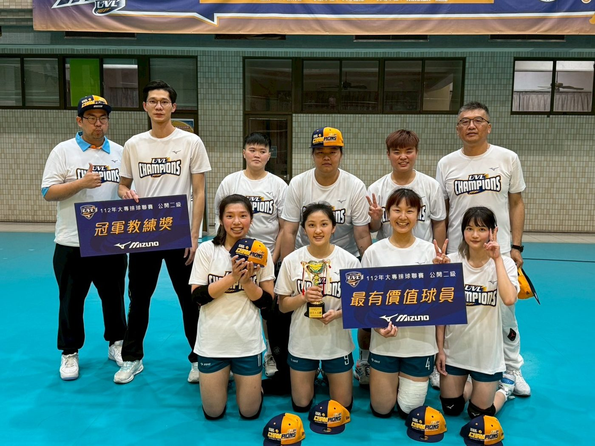
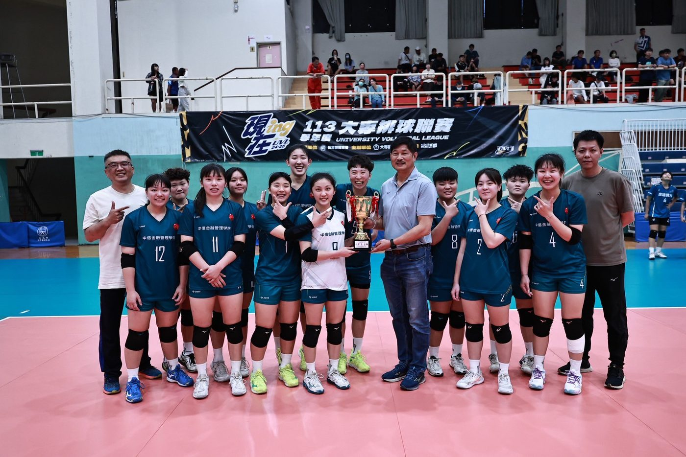

01我的故事
第一年的中信女排
我們在112學年度成軍，當時在人數僅為7人的戰力下經歷總總困難，在無人換血的比賽中，從預賽挺進決賽，最後終於在第一年的大專排球聯賽的公開二級獲得冠軍，並取得晉級113學年度大專排球聯賽的公開一級。


第一年的中信女排
我們在112學年度成軍，當時在人數僅為7人的戰力下經歷總總困難，在無人換血的比賽中，從預賽挺進決賽，最後終於在第一年的大專排球聯賽的公開二級獲得冠軍，並取得晉級113學年度大專排球聯賽的公開一級。


歷屆成績 · 更新於 2025/10/28
訓練與參賽計畫
中信金融管理學院位於台南市，由中信金融控股公司支持並於 2015 年改制成立，前身為興國管理學院。學校以財務金融、財經法律與企業管理三大領域為核心，採取小班制教學，強調師生互動與實務導向。透過中信金控的企業資源，學院積極推動產學合作與業師制度，並開設金融科技、大數據、AI 等跨領域學分學程，致力於培養具備專業知識與實務能力的應用型人才。
除專業課程外，學院亦重視學生多元發展。女子排球隊也是校園特色之一。球隊成立宗旨在於推廣體育風氣、培養學生第二專長，並透過運動培育紀律、毅力與團隊合作精神。球員在專業教練指導下積極參與全國性賽事，並兼顧課業與品格養成。這不僅展現了學院在體育與教育並重的理念，也提供學生在專業領域之外，發揮潛能與建立自信的平台。
整體而言，中信金融管理學院兼顧專業知識、產業連結與全人教育，學生除了能在金融與企業領域紮實發展，也能在運動與校園文化中獲得多元成長。
爭取在大專賽事中取得較為優異的成績，並為學校排球隊贏得更多的聲譽，提升專業技能及培養國家人才。
我想達到…
1.集中訓練基本技術：發球、接發、傳球、扣球、攔網、配合跑位等。
2.體能訓練，重點是提升隊員的核心力量、靈活性與爆發力。
3.進行團隊合作與基本戰術演練，，並逐步加入反應訓練，提升球員在高壓下的應對能力。
4.定期與其他學校進行友誼賽，檢視技術進步，找出弱點。
1.進階技術訓練，如高強度的發球、快攻、攔網等高難度技能。
2.強化集體戰術，如快攻配合、陣地防守與反擊等，並且開始針對比賽進行模擬訓練。
3.開始進行多樣化、複雜的戰術演練，如根據對手優勢調整戰術、靈活應對不同局面等。
4.安排與其他學校的聯賽比賽或區域賽事，以積累比賽經驗。
5.定期進行心理訓練，幫助隊員調整心態，提升比賽中的抗壓能力。
賽季結束後的訓練，將對球員的整年度的表現進行分析，並根據結果進行後續的調整，於下一個賽季開始前進行改進，並給予選手適當的休息放鬆、傷勢的療養及恢復。
1.爆發力訓練：
(1)跳躍訓練：深蹲跳、箱子跳、立定跳遠等等。
(2)短跑訓練：衝刺訓練，10米×5組，休息30秒。
2.耐力訓練：
(1)間歇跑：30秒快速跑，30秒慢跑，反覆5組。
(2)長時間跑步：持續跑步30分鐘。
3.核心力量訓練：每週至少2次的核心訓練，每次8個動作，反覆3組。
4.靈活性訓練：
(1)動態伸展：每次10-15分鐘。
(2)敏捷訓練：繩梯訓練，每組15次，做3組。
1.發球：針對弱點區域（如對方後排或角落），進行精準發球練習。
2.接發球：
(1)低手接發：站位訓練，專注於腿部移動和手臂穩定。
(2)高手接發：訓練接發中高球的準確性，並將接發穩定性提高。
3.扣球：針對不同攻擊手的位置進行各種跑位練習，以及技巧球的處理。
4.攔網：訓練快速起跳與移位起跳，模擬實際比賽環境，觀察對方攻擊動作，預測並攔網。
1.進攻戰術：
(1)快攻：訓練快速傳球後的進攻反應。
(2)二傳配合：與二傳配合練習，設計不同的攻擊路線和方式。
2.防守戰術：訓練隊員如何根據對方攻擊點站位，快速移動防守。
3.配合戰術：
(1)站位配合：模擬比賽情況，訓練球員間快速移位從傳球開始到組織進攻的搭配合作。
(2)心智戰術：學會在比賽中隨時調整戰術應對對方強弱點。
1.心理穩定性訓練：
(1)深呼吸與放鬆技巧：每次訓練或比賽前，進行深呼吸放鬆，幫助平穩情緒。
(2)正向自自我對話：每次練習結束後，進行幾分鐘的正向自我對話與目標設定。
2.抗壓能力訓練：
(1)模擬高壓情境：設置壓力情境（如比賽中落後時），訓練隊員在壓力下保持冷靜。
(2)比賽模擬：每週進行高強度模擬比賽，讓隊員在真實情境下學習如何應對壓力。
需求項目與數量（依官方頁面）
| 選手營養費 | NT$ 126,000 |
| 訓練器材裝備費 | NT$ 115,500 |
| 參賽報名費 | NT$ 9,000 |
| 移地訓練費 | NT$ 700,400 |
| 選手零用金 | NT$ 200,000 |
| 參賽旅運費 | NT$ 312,000 |
| 教練指導費 | NT$ 72,000 |
| 經費需求合計 | NT$ 1,534,900 |
| 服裝 | 20套 |
標示「不公開」者為官方頁面未揭露之欄位。
網路公開搜尋結果，均附原始出處
義力營造與中信金融管理學院簽約合作推動女子排球發展，報導中並有中金院女排隊長江昀庭代表球隊致詞。
出處：https://www.cna.com.tw/postwrite/chi/436590成軍三年的中信學院女排在大專排球聯賽(UVL)公開女子組四強賽3比2擊敗台灣師大，首度闖進冠軍戰。
出處：https://udn.com/news/story/7003/9409126介紹中金院各運動代表隊年度成績，其中提到女子排球隊首次參加大專排球聯賽即奪下UVL冠軍（另含跆拳道等隊伍）。
出處：https://www.cna.com.tw/postwrite/chi/378678中信金融管理學院排球社的Facebook粉專；頁面為社團性質，無法確認即為女排校隊專頁。
出處：https://www.facebook.com/ctbcedu.volleyballteam/